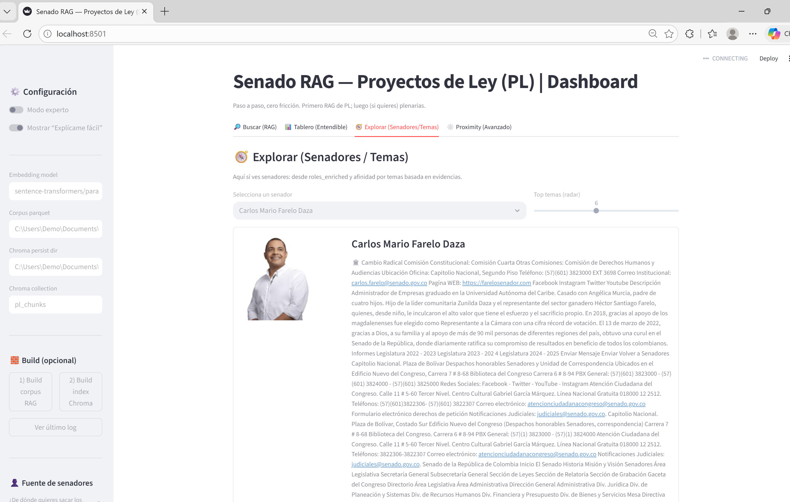
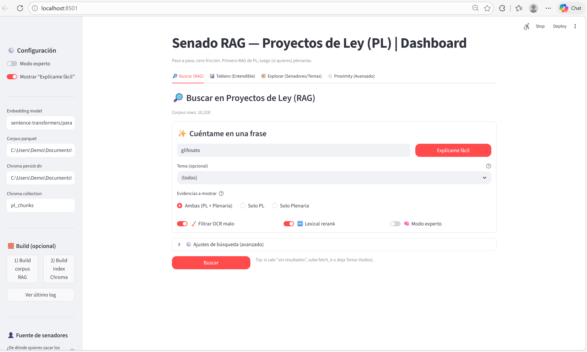
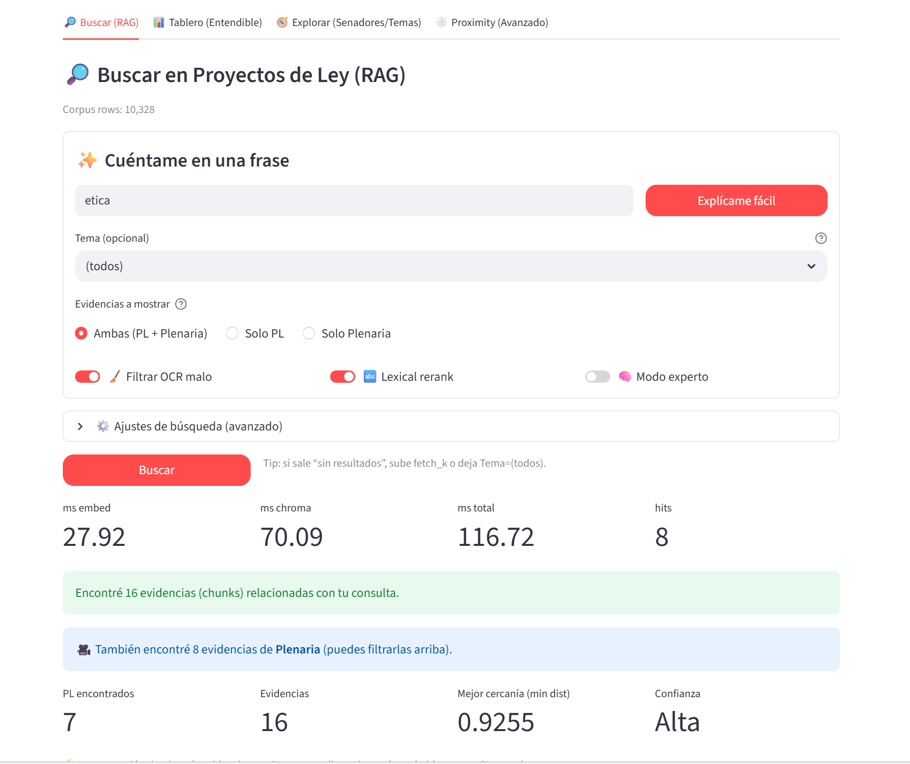
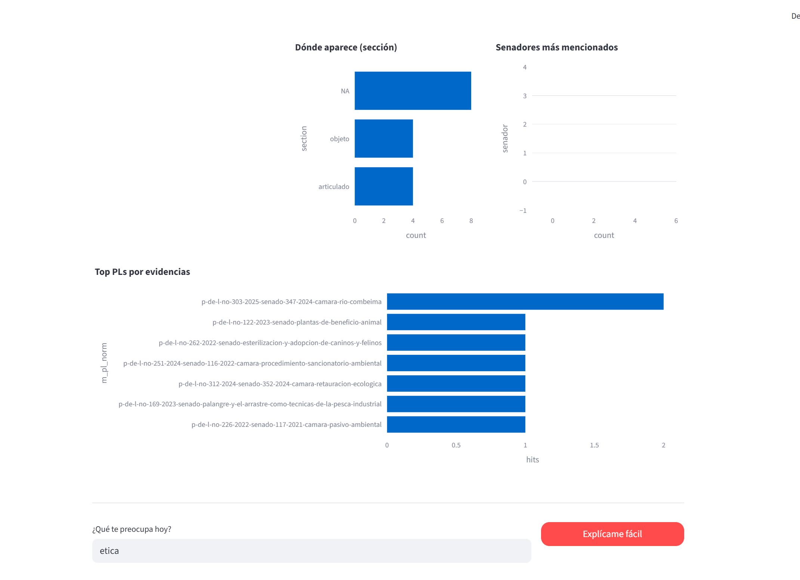
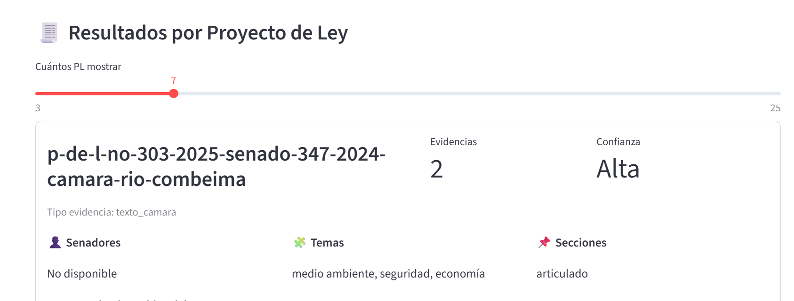
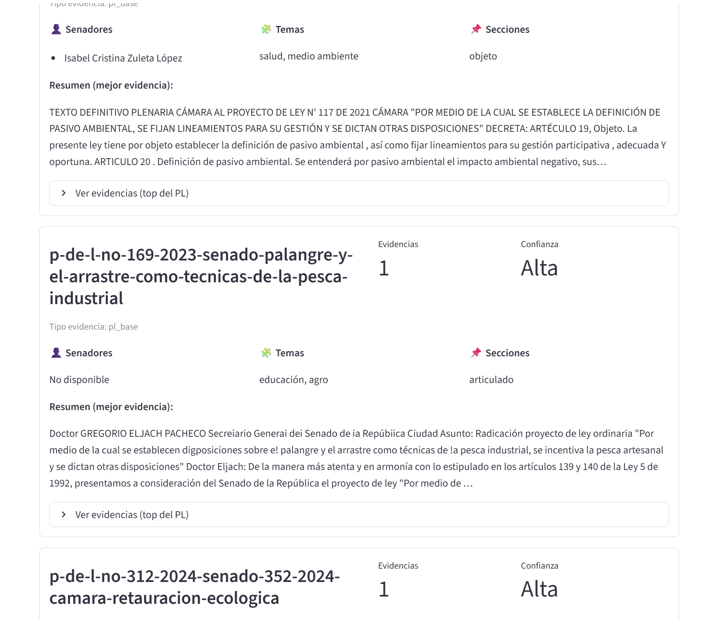
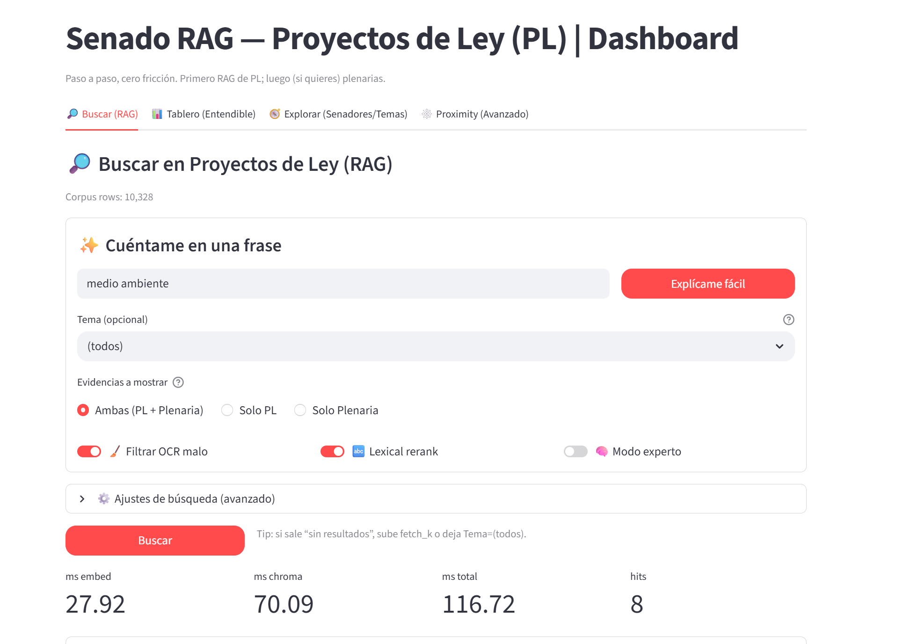
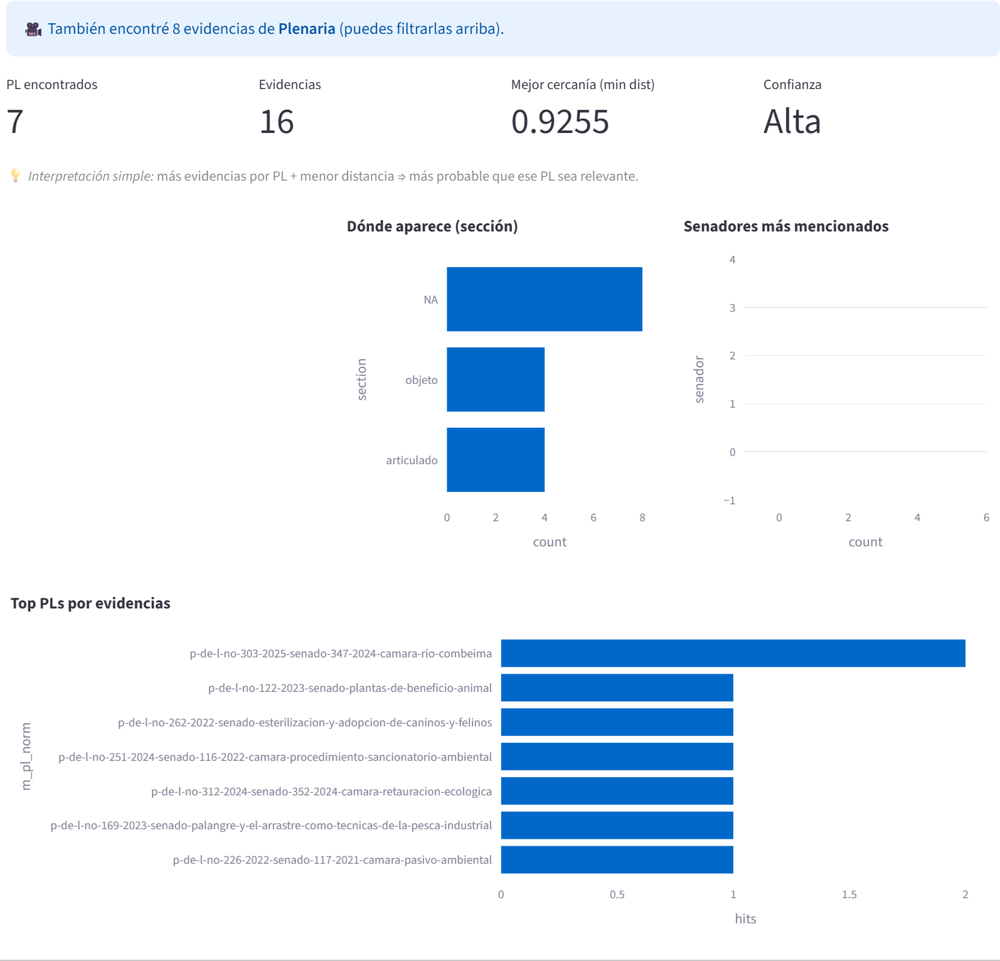
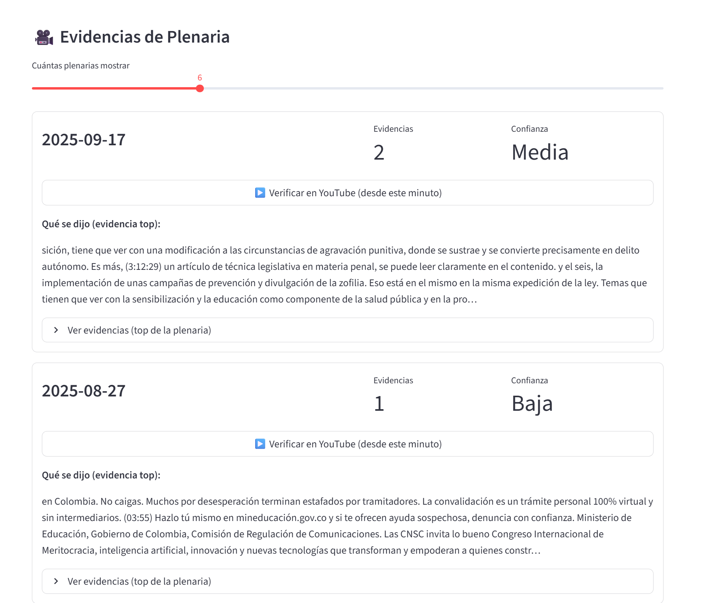
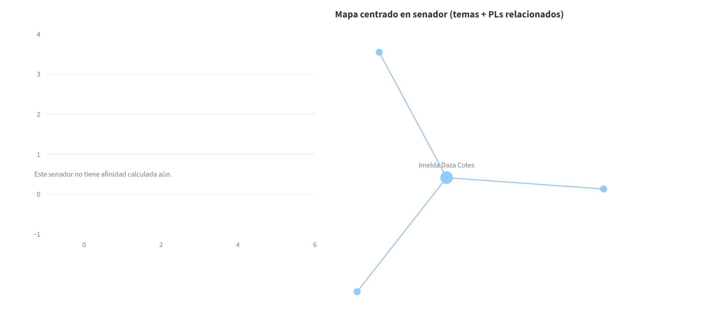

🔎
Búsqueda semántica
Recupera evidencia desde lenguaje natural usando embeddings y búsqueda vectorial.
Explora proyectos de ley, plenarias y comportamiento legislativo con una experiencia visual más clara, apoyada en búsqueda semántica, evidencia documental y analítica interactiva.

La información legislativa suele estar dispersa, ser extensa y difícil de interpretar rápidamente. Este sistema convierte corpus documentales en una experiencia navegable y útil para análisis político, investigación y exploración pública basada en evidencia.
No es solo un dashboard. Es una capa de inteligencia sobre proyectos de ley, plenarias y actores legislativos, diseñada para recuperar, cruzar y visualizar información con mayor contexto.
Recupera evidencia desde lenguaje natural usando embeddings y búsqueda vectorial.
Muestra métricas, tendencias, rankings y señales interpretables del comportamiento legislativo.
Relaciona perfiles, temas, grafos y proyectos asociados a cada senador con una lectura más rica.
Una vista más completa del flujo: búsqueda, interpretación, resultados por proyecto, evidencias de plenaria y exploración centrada en senadores.

Entrada principal para consultar proyectos de ley y combinar evidencias de PL y plenaria.

Muestra volumen de evidencias, proximidad, confianza y contexto inicial de recuperación.

Gráficos para ubicar secciones, top PLs y senadores más mencionados.

Cards con confianza, evidencia, temas, secciones y senadores relacionados.

Presenta resumen del fragmento más fuerte y acceso al desglose completo por proyecto.

Asocia fechas, confianza y acceso a verificación en YouTube para contraste documental.

Integra imagen, partido, enlaces y descripción enriquecida del actor legislativo.

Visualiza la relación entre el senador, temas y proyectos asociados.

Radar y grafo para una lectura más interpretativa de la proximidad del senador a los temas.

Tabla operativa de proyectos vinculados al senador desde roles enriquecidos.

Permite ajustar corpus, embeddings, colecciones, modos de exploración y parámetros del sistema.
El sistema transforma documentos legislativos en una interfaz de análisis, combinando normalización documental, embeddings, indexación vectorial y visualización interactiva.
Proyectos de ley, plenarias, metadatos y directorios de senadores.
Limpieza, estructuración y consolidación del corpus legislativo.
Representación semántica de texto con modelos multilingües.
Persistencia vectorial y recuperación contextual de evidencias.
Interfaz Streamlit para consultar, interpretar y navegar resultados.
Una combinación de infraestructura ligera, NLP y visualización aplicada al análisis legislativo.
Este repositorio no busca mostrar solo código. Busca evidenciar una aplicación real de IA para análisis legislativo, transparencia, investigación y exploración documental estratégica.